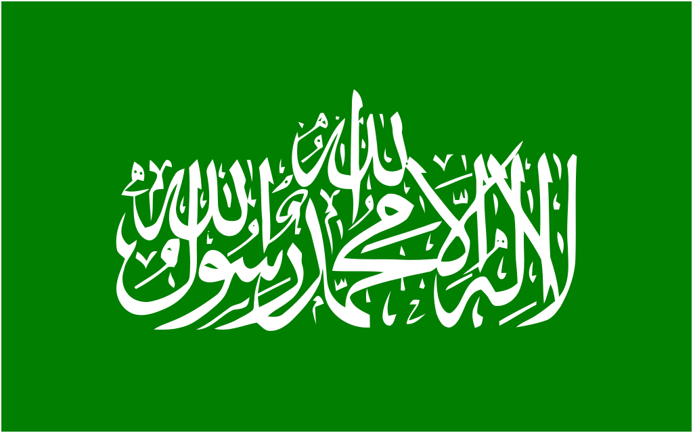
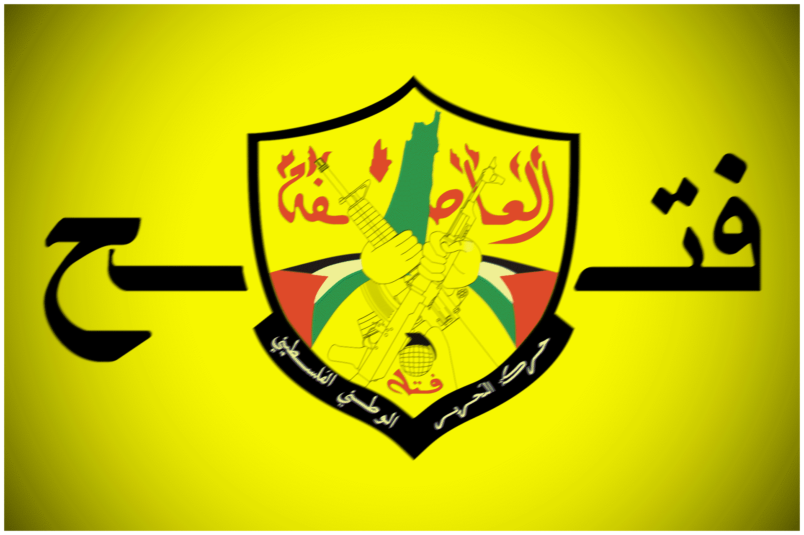
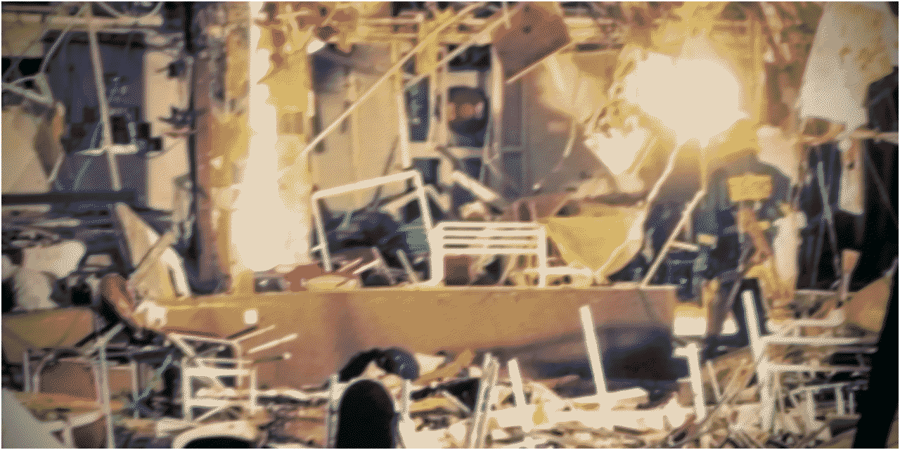
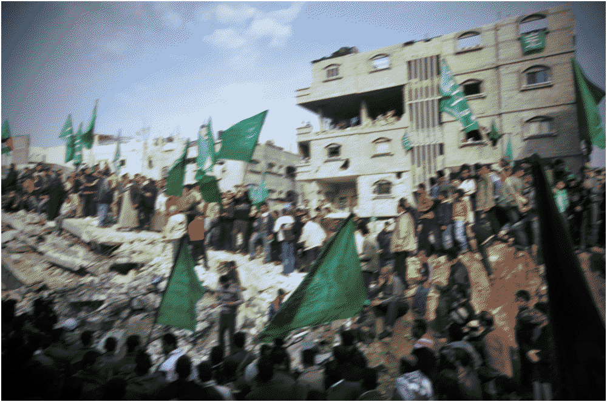
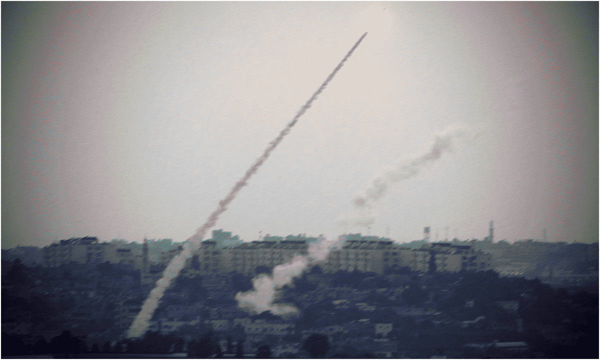
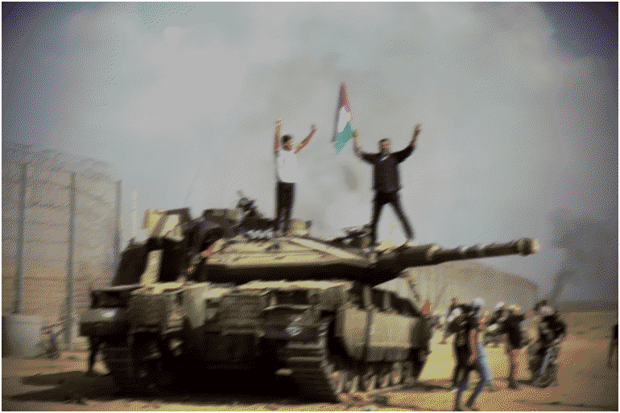
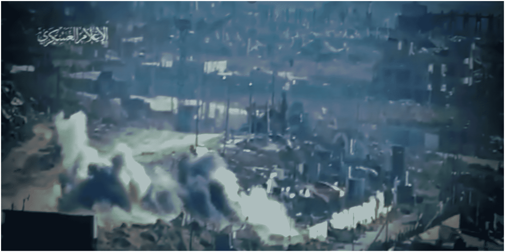
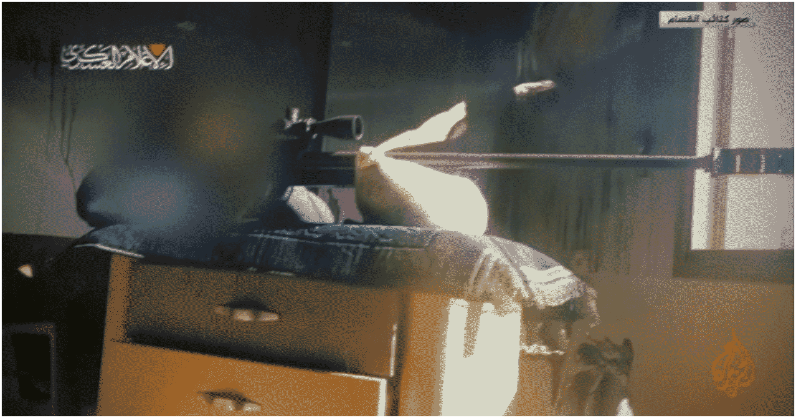
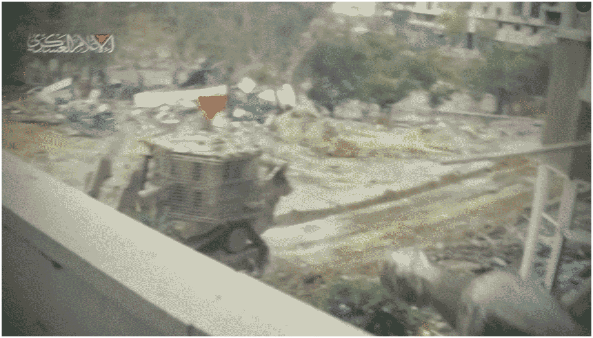

Hamas
Hamas
Updated: 2/9/25

Overview
Hamas , officially known as the Islamic Resistance Movement , is a Palestinian al-Qassam Brigades . Since its inception in the First Intifada, Hamas has come to capture the entire Gaza Strip and parts of the West Bank from the IDF Militants Authority Fatah

, Hamas has continued armed resistance against Israel Fatah and PA PA Israel Israel Ideology & Tactics
The ideology of Hamas, the largest Palestinian Palestinian Israel Israeli Israeli PA Fatah administration for increasing corruption and the failing of the Oslo peace process. This tactic allowed them to sweep the 2006 Palestinian PA Israeli Israel IDF Israeli Israel IDF
Notable Actions
• May 3, 1989 : In one of their first militant attacks during the chaos of the First Intifada, Hamas Israeli Israel Hamas
• April 16, 1993 : In the first SVBIED attack of the Israeli Palestinian Hamas Israeli Palestinian Israeli
• April 6, 1994 : In retaliation for the Kahanist terrorist attack in Palestinian Hebron, West Bank, A Hamas Hamas Hamas Israel
• October 19, 1994 : A Hamas Israeli
• February 25, 1996 : A Palestinian Hamas Palestinian America
• July 30, 1997 : Two Palestinian militants Hamas Hamas
• June 1, 2001 : In one of the deadliest Hamas Israelis

Fig 1. RESULTS OF THE SUICIDE BOMBING IN NETANYA, ISRAEL, DURING PASSOVER, A JEWISH RELIGIOUS HOLIDAY c. MARCH OF 2002
• August 9, 2001 : A Hamas Israeli IDF Hamas Israeli PA
• March 27, 2002 : On the eve of the holy Jewish day of passover, a Palestinian Hamas Israeli Palestinian
• March 31, 2002 : A Palestinian Israeli Hamas IDF Palestinian
• March 5, 2003 : A Hamas Israeli IDF Hamas Israeli
• June 10, 2007 : Following their victory in the 2006 Palestinian Fatah and Hamas Palestinian Hamas Fatah . Both sides were accused of war crimes like the targeting of civilians and engaging in warfare around hospitals. After the conclusion of the short civil war, both Hamas Fatah established separate governments over Palestine, forever splitting the Palestinian

Fig 1. SUPPORTERS OF HAMAS NEAR DESTROYED BUILDINGS DECLARING VICTORY FOLLOWING A CEASEFIRE AND ISRAELI WITHDRAWAL c. JANUARY OF 2009
• December 27, 2008 : A shaky ceasefire between Israel Hamas IDF Hamas Hamas IDF Hamas IDF Hamas Israeli Israeli Hamas
• August 14, 2009 : Heavy fighting erupts in the southern Gazan city of Rafah after a jihadist cleric by the name of Abdel Latif Moussa declared an Islamic Emirate of Rafah during a sermon. He called Hamas
• August 31, 2010 : /Article.aspx?id=186614"> Hamas Israeli Israel IDF Hamas PA Israel
• November 14, 2012 : -military-chief-killed-in-Gaza-air-strike.html"> A month of tensions between Hamas Israel IDF IDF Israeli Palestinian civilians and militants alike Hamas Israeli Israelis

Fig 2. HAMAS OR OTHER PALESTINIAN MILITANTS LAUNCH ROCKET ATTACKS ON KIBBUTZIM IN ISRAEL c. JULY OF 2014
• June 12, 2014 : Palestinian militants Israeli Hamas IDF Israel IDF Hamas Israel Hamas Israeli Israeli Hamas
• May 10, 2021 : In 2021, following the Israeli Palestinian Hamas Palestinian Hamas Israeli Israel Israeli Palestinian Hamas Israel Palestinians, including civilians and militants Hamas Israel

Fig 3. PALESTINIANS CLIMB ONTOP OF AN ISRAELI MERKAVA MBT FOLLOWING HAMAS' OPERATION AL-AQSA FLOOD BREAKS THIS PART OF THE FENCE c. OCTOBER OF 2023
• October 7, 2023 : After around nine years of increasing buildup, Hamas Palestinian Israel Hamas Hamas Israelis Israel Israel America Israel Israel Palestinian
• December 13, 2023 : Hamas IDF Hamas Israeli
• January 22, 2024 : In Maghazi refugee camp in central Gaza, a Hamas Israeli Israeli IDF

Fig 4. STILL FROM A VIDEO DEPICTING THE DEADLY AMBUSH OF ISRAELI MILITARY VEHICLES IN TALL AL-SULTAN c. JUNE OF 2024
• April 6, 2024 : Hamas IDF Israeli
• June 15, 2024 : %20fighters%20killed%20eight%20Israeli,force%20deployed%20to%20the%20scene"> Al-Qassam Brigade fighters conducted an ambush against a convoy of IDF Hamas Israeli Hamas Hamas IDF
• August 31, 2024 : Amid the IDF Hamas Israeli IDF Palestinian militants
• October 1, 2024 : Nearly a year after the October 7th terrorist attack, Hamas
• December 5, 2024 : The Palestinian Authority PIJ Hamas PA Israeli kahanists Palestinian PA Hamas PIJ IDF

Fig 5. HAMAS SNIPER TAKES AIM AT ISRAELI SOLDIERS IN NORTH GAZA STRIP'S BEIT HANOUN c. APRIL OF 2025
• January 21, 2025 : After seeing the PA Israelis Hamas Israeli
• April 6, 2025 : A Hamas Israeli IDF
• June 6, 2025 : Amidst the IDF Hamas IDF IDF Hamas
• July 7, 2025 : Amid the start of heavy Israeli Hamas IDF Israeli Hamas Israeli IDF
• September 8, 2025 : Two Palestinian militants Israeli Hamas Israeli Israelis

Fig 6. STILL FROM A VIDEO SHOWING HAMAS MILITANTS AMBUSH A BULLDOZER IN SOUTHERN GAZA CITY WITH AN RPG AT DURING THE ISRAELI OFFENSIVE c. SEPTEMBER OF 2025
• September 16, 2025 : After weeks of buildup and signalling, the IDF Hamas IDF Hamas Palestinian USA IDF
• October 12, 2025 : Hamas Israel Hamas Palestinian Israel IDF Hamas
Sources
• https://www.middleeasteye.net/news/hamas-2017-document-full
• https://www.washingtoninstitute.org/policy-analysis/growing-internal-tensions-between-hamas-leaders
• https://ctc.westpoint.edu/the-road-to-october-7-hamas-long-game-clarified/
• https://www.cfr.org/backgrounder/what-hamas#chapter-title-0-4
• https://www.nytimes.com/2024/10/22/world/middleeast/hamas-israel-gaza-guerrilla.html